地政学
名古屋は東京と大阪の間にあり、東海道新幹線、名神、東名、伊勢湾の港を結ぶ。濃尾平野、三河、岐阜、三重を束ねる位置が、製造と物流の日本列島の中継点としての重みを生む都市である。列島の中央を押さえる街。

🇯🇵 日本 / 愛知県 / World City Atlas
日本列島の中央で、東京と大阪を結ぶ大動脈、伊勢湾の港、濃尾平野の工業地帯を束ねる実務都市。自動車、航空宇宙、工作機械、港湾物流、城下町の記憶、熱田の信仰、味噌の食文化、郊外の通勤生活が重なります。
都市の骨格
名古屋は、単独の都心だけでなく、豊田、刈谷、小牧、四日市、岐阜方面まで広がる中京圏の結節点である。港と内陸工場、駅と高速道路、城下町と郊外住宅が、実用的な都市の強さをつくる。
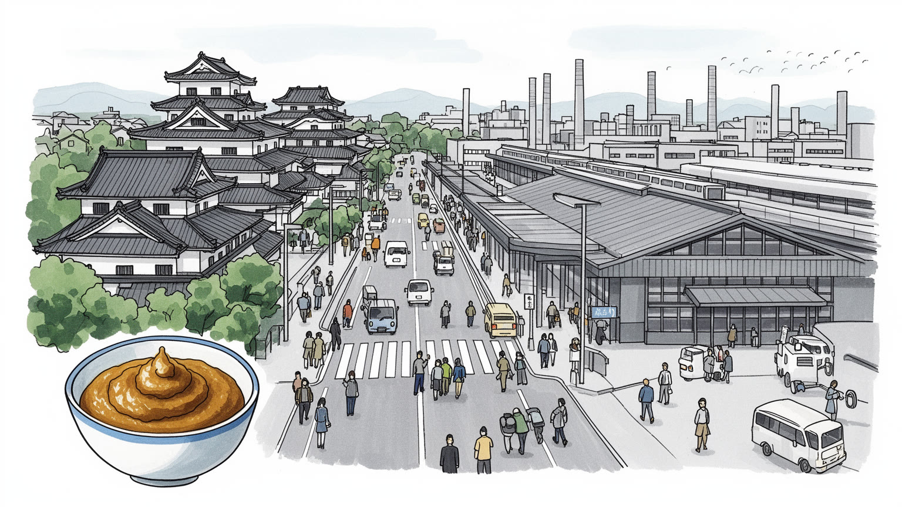
名古屋は東京と大阪の間にあり、東海道新幹線、名神、東名、伊勢湾の港を結ぶ。濃尾平野、三河、岐阜、三重を束ねる位置が、製造と物流の日本列島の中継点としての重みを生む都市である。列島の中央を押さえる街。
自動車、航空宇宙、工作機械、セラミックス、港湾物流が都市圏の仕事を厚くする。大企業の設計と中小部品工場、派遣、技能実習、保全、配送が重なり、現場の精度と納期が地域経済を動かす実務都市だ。工場の朝が早い街。
名古屋城、尾張徳川の記憶、熱田神宮、大須観音、祭礼、喫茶店、味噌の食文化が工業都市の硬さを和らげる。信仰と城下町、商店街と家庭料理が近く、派手さよりも続く習慣が文化の核になる。日常に濃い味が残る。
旅行者は城、熱田神宮、栄、大須、産業博物館、港を巡るが、住民は車通勤、郊外住宅、夏の暑さ、台風、子育て、工場勤務の時間と向き合う。観光の裏に、堅実で広い生活圏が見える都市である。地下街と郊外が日常だ。
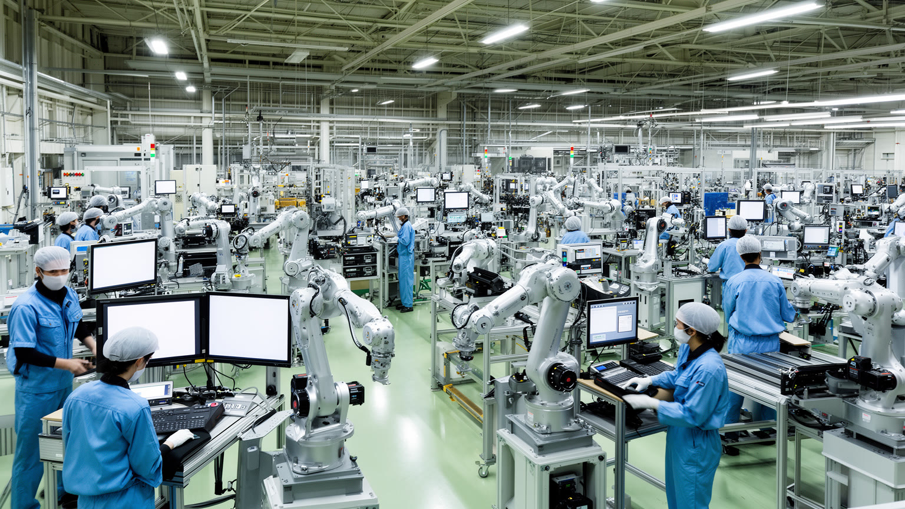
名古屋の経済を読む入口は、都心のオフィスだけでなく、中京圏全体に広がる製造の供給網である。豊田、刈谷、安城、小牧、各務原、四日市方面には自動車、航空宇宙、工作機械、セラミックス、化学、物流の拠点が連なり、名古屋市はそれらを束ねる業務、金融、教育、交通、消費の中心になる。完成車メーカーの存在は強いが、都市の実体は部品、金型、測定、保全、塗装、検査、ソフトウェア、倉庫、食堂、清掃まで含む分業の厚みにある。大企業の研究所と中小工場、正社員と派遣、熟練技能者と外国人労働者が同じ納期に向き合うため、景気や為替の変化は生活へ直接届く。名古屋の豊かさは、華やかな消費よりも、品質管理と現場改善の積み重ねに支えられる。工場の朝、通勤バス、幹線道路の部品輸送を見れば、この都市が日本のものづくりを抽象的な精神論ではなく、毎日の段取りとして担っていることが分かる。製造業は都市の誇りであると同時に、電動化、脱炭素、労働力不足、下請け収益の圧力を受ける現場でもある。その変化を乗り切れるかが、名古屋の次の世代の安定を左右する。部品一つの遅れが国内外の工場へ波及するため、地域の強さは協力会社の資金繰り、技能継承、若者が現場に残れる賃金にも左右される。見えにくい現場の更新こそ都市の基礎だ。その積層が街を支える力だ。今も。
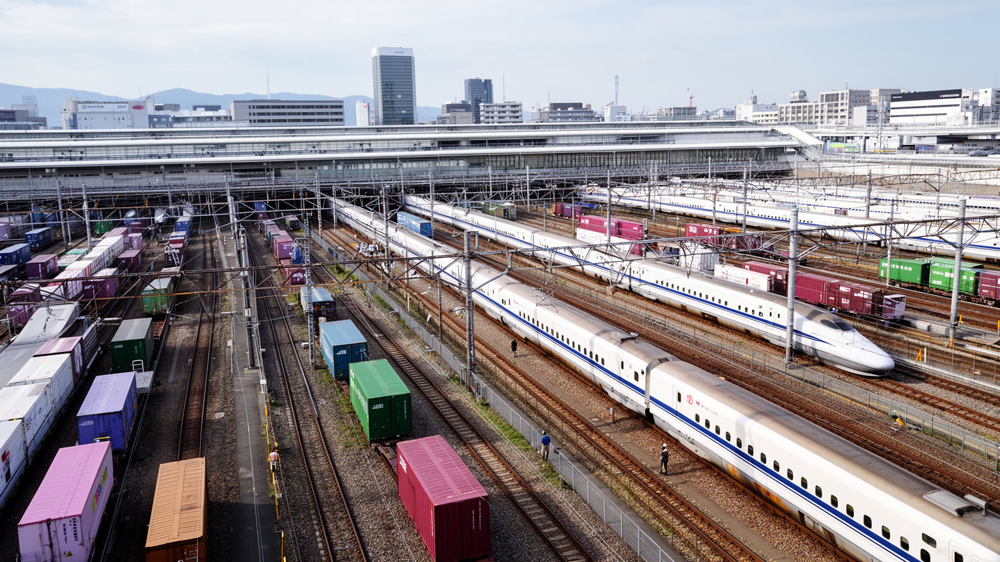
名古屋駅は、単なる大きな駅ではなく、日本列島の中央で人、情報、部品、会議、買物を流す装置である。東海道新幹線は東京、大阪、京都を短時間で結び、在来線、地下鉄、私鉄、バス、高速道路が濃尾平野と三河、岐阜、三重を都心へつなぐ。名駅周辺の高層ビル群は企業の支社、商業施設、ホテルを集め、製造業の打ち合わせや出張を支える玄関口になった。だが、鉄道の価値は出張客だけでなく、毎朝の通勤者、学生、販売員、清掃員、飲食店の仕込み、配送の時間にも表れる。名古屋は車社会の印象が強いが、都心の地下街、乗り換え、駅前バスターミナルは日常の密度を作っている。リニア中央新幹線への期待は大きい一方、工事費、環境、開業時期、駅周辺再開発の負担も都市に影を落とす。速く移動できることは便利だが、駅前の地価上昇や周辺商店街の入れ替わりを伴う。名古屋の鉄道物流を読むには、華やかな高層ビルと同時に、早朝のホーム、地下の店舗、郊外駅前の駐輪場、工場へ向かうバスを見る必要がある。中央にある都市は、通過される危険もある。だから名古屋は、速さを地域の仕事と生活へ結び直す力を問われている。貨物駅や高速道路の結節、空港連絡も含めれば、駅前の便利さは広域物流の一部である。移動の短縮が都心だけを潤すのか、周辺の工場や住宅地にも利益を返すのかが重要になる。
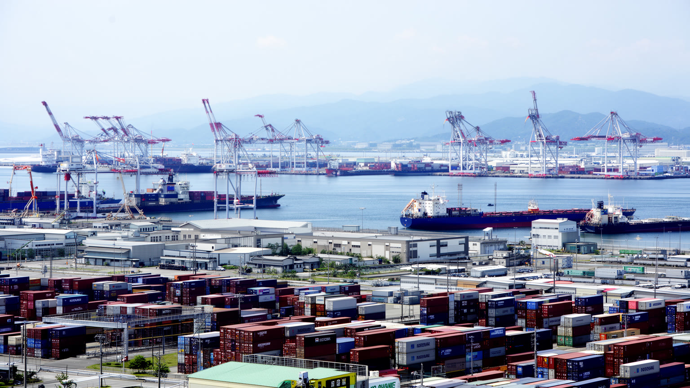
名古屋港は、名古屋が内陸の工業都市だけではないことを示す巨大な玄関である。伊勢湾奥の岸壁には完成車、部品、工作機械、化学品、原材料、コンテナが集まり、中京圏の工場を世界市場へつないでいる。港湾の仕事は、クレーンや船だけでなく、通関、倉庫、検査、保険、トラック、鉄道、港湾労働、危険物管理、情報システムによって成り立つ。自動車輸出が強い地域では、港の混雑、半導体不足、為替、海運運賃、海外需要が、工場の稼働と家計に連動する。港は観光客にとって水族館や展望施設のある場所だが、都市経済にとっては重い貨物を動かす実務の場である。伊勢湾台風の記憶がある地域では、高潮、液状化、堤防、避難、事業継続計画も港の条件になる。埋立地と工業地帯は豊かさを生む一方、自然海岸の喪失や水質、騒音、トラック交通の負担も抱える。名古屋港を読むと、都市の製造力は工場の中だけで完結せず、海へ出る最後の距離に支えられていることが分かる。港湾の夜景は美しいが、その光は交代勤務と安全確認の光でもある。ここでは世界経済が、岸壁の作業時間として都市へ入ってくる。臨海部の倉庫や検査場、休憩所、整備工場は目立たないが、輸出入の速度を守る要である。港が止まれば名古屋の工場も止まるため、海辺の現場は都市の心臓部に近い。海の労働も街の労働だ。
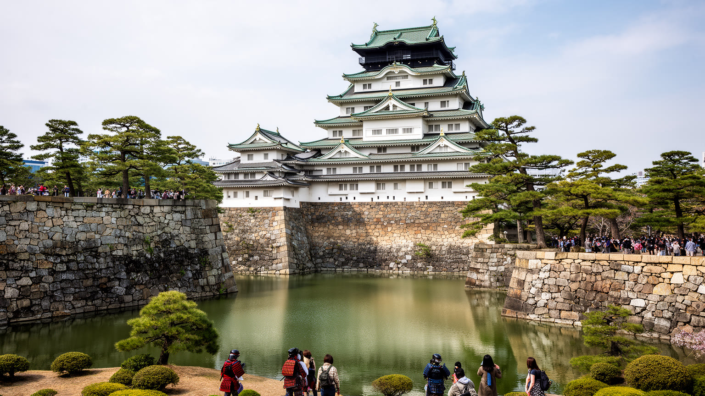
名古屋の歴史的な中心には、名古屋城と尾張徳川の記憶がある。江戸時代の城下町は、東海道と中山道の結節、武家地、町人地、寺社、堀、道路の構造を通じて都市の骨格を作った。戦災と戦後復興によって多くの景観は失われたが、城の石垣、堀、徳川美術館、白壁や大須周辺の街路には、支配と商業と信仰が重なった時間が残る。名古屋城は観光の象徴であると同時に、復元の方法、木造化、史実性、バリアフリー、財政をめぐる議論を抱える公共財でもある。金の鯱の明るいイメージだけでは、空襲で焼けた都市の記憶や、戦後に広い道路を持つ近代都市へ作り替えられた過程は見えにくい。尾張徳川の文化は茶道、能、武家の道具、庭園、文書の保存を通じて、製造業の街とされる名古屋に別の厚みを与える。城を眺めることは、観光写真を撮ることにとどまらない。都市が何を失い、何を復元し、どの時代の記憶を公共空間へ置くのかを考える入口である。名古屋の実用的な印象は、この歴史の層を知ると少し違って見える。堀端の静けさは、工業都市の速い時間の中に残る古い政治の輪郭である。城下町の町割りは、現在の道路や町名、寺社の位置にも影を落とす。戦後の都市計画が古い構造を上書きしても、記憶は博物館だけでなく日々歩く道に残り続けている。保存と復元の選択は、街が自分の過去をどう語るかを決める作業でもある。
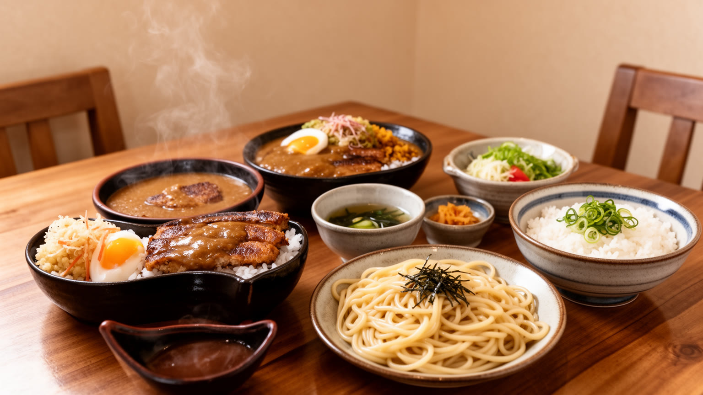
名古屋の食文化は、観光用の名物というより、地域の気質と生活時間を映す日常の味である。味噌煮込みうどん、味噌かつ、どて煮、手羽先、きしめん、ひつまぶし、小倉トースト、喫茶店のモーニングは、濃い味、手早い外食、家族の集まり、仕事前の習慣を結びつける。八丁味噌を含む豆味噌の文化は、保存性、発酵、農村と城下町の流通に根を持ち、料理の色の濃さだけでは語れない。喫茶店は打ち合わせ、近所づきあい、高齢者の居場所、営業職の休憩、週末の家族時間として機能し、都心だけでなく郊外の生活を支えている。ひつまぶしは晴れの日の食であり、うなぎ資源や価格上昇とも無関係ではない。人気店が観光化すれば、行列や価格が日常の店を変えることもある。食の魅力は厨房の仕込み、朝早い配送、家族経営、アルバイト、観光客への接客に支えられる。名古屋めしという言葉は軽く聞こえるが、その背後には濃尾平野の食材、発酵、商店街、喫茶文化、工場労働者の腹持ちへの感覚がある。名古屋を味わうことは、派手な都心文化ではなく、働く街の食卓がどのように続いてきたのかを見ることでもある。濃い味は、地域の記憶を毎日の昼食へ戻す合図になる。朝の喫茶店で新聞を読む人、昼休みに定食を急ぐ人、休日に家族でうなぎを囲む人まで、食は都市の時間割を映す。味の強さは、仕事のリズムと家庭の記憶をつなぐ身近な文化である。
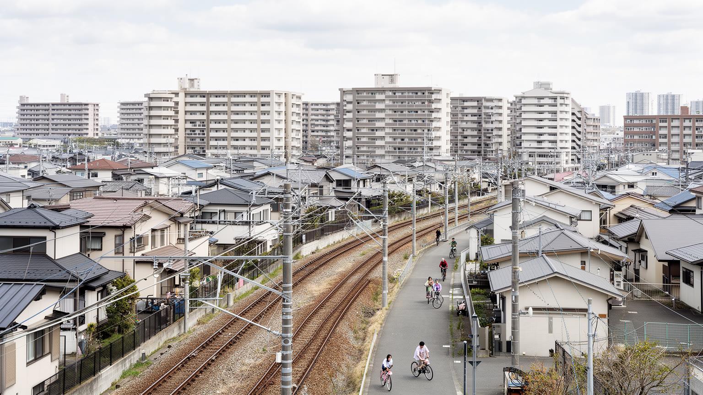
名古屋の暮らしは、都心の密度だけでなく、広い郊外住宅地と車に支えられている。名古屋市内の地下鉄沿線、尾張や三河のニュータウン、豊田方面の企業城下町、岐阜や三重からの通勤圏が重なり、生活の距離は大きい。住宅は東京や大阪の中心部に比べれば余裕があるとされるが、車の維持費、駐車場、教育費、共働きの送迎、親の介護、工場勤務のシフトが家計と時間を左右する。鉄道駅の近くに住めば通勤は楽になるが、郊外の大規模商業施設や工場へは車が欠かせない場面も多い。名古屋の実用性は、地下街、広い道路、駐車場、郊外型店舗、喫茶店、ショッピングモールに表れる。一方で、車に乗れない高齢者、学生、低所得世帯には移動の壁が生まれやすい。郊外の家は家族の安定を象徴するが、空き家、人口減少、バス路線の縮小、災害時の孤立も課題になる。名古屋都市圏を読むには、名駅や栄だけでなく、朝の幹線道路、駅前の送迎、工場の駐車場、住宅地の小さな公園を見る必要がある。そこに、堅実な生活を重んじる都市の現実がある。広い生活圏は自由を与えるが、毎日の移動を個人の責任へ寄せる。その負担をどう減らすかが、次の住みやすさを決める。子育て世帯にとっては、保育園、学校、病院、実家との距離が住まい選びを左右する。郊外の穏やかさを保ちながら、歩ける生活と公共交通を厚くできるかが、長く住める都市圏の条件になる。
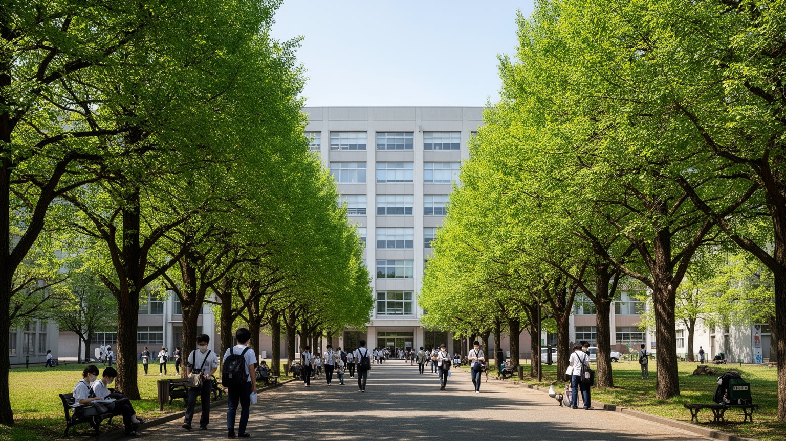
名古屋は製造の街であると同時に、大学と研究の蓄積を持つ知識都市でもある。名古屋大学、名古屋工業大学、名古屋市立大学、南山大学、周辺の研究機関や企業研究所は、材料、機械、航空宇宙、医療、情報、環境、都市政策の人材を育てている。工場の現場力だけでは、電動化、自動運転、脱炭素、半導体、医療技術、航空機開発の変化には対応できない。大学の研究室、企業の開発部門、試験場、スタートアップ支援、病院、行政がつながることで、名古屋の産業は次の形を探している。学生街は東京ほど派手ではないが、下宿、書店、食堂、研究室の深夜の明かりが、都市に若い時間を与える。研究には国際学生や外国人研究者も関わり、製造業の地域に新しい文化的な開き方をもたらす。一方で、博士人材の就職、研究費、英語環境、女性研究者の継続、住宅費は課題として残る。名古屋の大学を読むことは、過去の成功に頼る工業都市が、どのように新しい知識を取り込み続けるかを見ることでもある。ノーベル賞級の研究成果だけでなく、地味な実験、測定、設計、学生の就職先が都市の未来を作る。研究の価値は、論文の外で地域の工場や病院へ移ったとき、初めて生活の力になる。学ぶ場の厚みは、実用の街を長く支える静かな資産である。企業に就職する学生が多い地域では、大学と産業界の距離が近い。その近さを単なる人材供給に終わらせず、自由な研究と地域課題の解決へ広げることが重要になる。
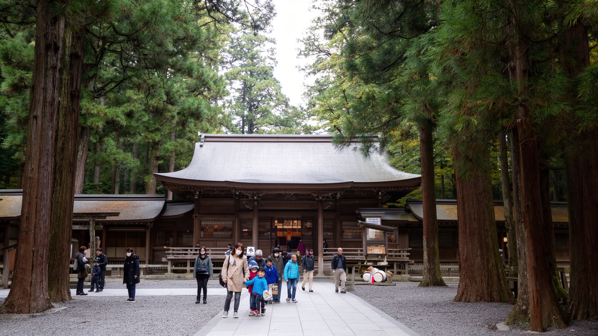
名古屋の精神的な軸を考えるとき、熱田神宮を外すことはできない。草薙神剣をめぐる信仰は、古代から続く聖地の重みを持ち、参道、杜、祭礼、初詣、結婚式、商売繁盛の祈りを通じて、現代の市街地に静かな時間を残している。工場、道路、駅、商業施設に囲まれた都市で、神社の森は気温や騒音を和らげる環境資産でもある。大須観音や商店街の祭り、地域の山車、盆踊り、神輿、町内会の行事は、名古屋の文化を観光施設から生活の場へ戻す。信仰は大げさな表現だけでなく、出勤前の参拝、子どもの成長祈願、商店の安全祈願、災害後の祈りとして続く。都市化が進むほど、祭礼を支える担い手の高齢化、町内会の弱体化、道路使用、騒音、費用の問題は重くなる。それでも、祭りは住民が顔を合わせ、地域の記憶を次世代へ渡す貴重な時間である。熱田の杜を歩くと、名古屋が効率と工業だけの街ではなく、古い信仰を都市の内側に保つ街であることが分かる。宗教的な場所は観光名所である前に、住民が日々の不安を置き、季節の区切りを確かめる場所である。祭礼の太鼓や参道の静けさは、広い道路と工場音の都市に別のリズムを与えている。観光客が短時間で通り過ぎる場所でも、地元の人にとっては人生の節目を預ける場所になる。その差を知ると、神社や祭りが都市の精神的なインフラであることが見えてくる。
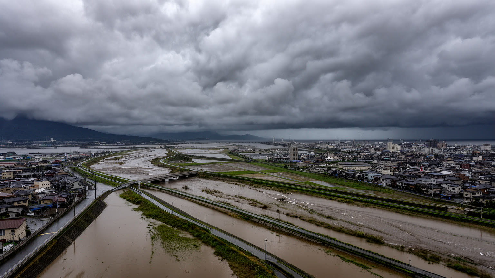
名古屋の気候と災害を考えると、伊勢湾台風の記憶、濃尾平野の低地、庄内川や木曽三川、夏の暑熱、南海トラフ地震への備えが一つにつながる。温暖湿潤な気候は暮らしや農業を支えるが、夏は湿度と気温が高く、屋外労働者、高齢者、通学する子どもに厳しい。台風や集中豪雨では、河川の増水、内水氾濫、地下街の浸水、港湾の高潮、交通停止が都市機能を揺らす。製造業が集まる地域では、工場の停止、部品供給の遅れ、倉庫の浸水が国内外の生産へ波及するため、防災は生活だけでなく経済の問題でもある。広い道路や地下街、港湾、臨海工業地帯、郊外住宅地は、便利さとリスクを同時に抱える。堤防、排水機場、ハザードマップ、避難所、企業の事業継続計画、学校や福祉施設の対応が、災害時の差を生む。気候変動で豪雨や暑熱が強まれば、低地の住宅、古い団地、車を持たない世帯、外国人労働者への情報提供がより重要になる。名古屋の堅実さは、平時の効率だけでなく、危険を想定して備える力に表れる。伊勢湾の穏やかな水面は、過去の被害を忘れさせることがある。だから都市は、記憶を制度と日常の訓練へ変え続けなければならない。災害時には家族の連絡、工場の再開、港の復旧、地下街の排水が同時に問われる。備えを行政任せにせず、企業と住民が共有できる形にすることが、産業都市の生命線になる。
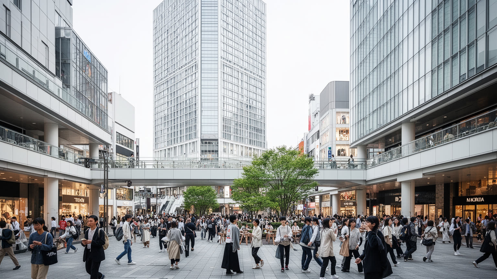
名古屋の街歩きでは、名駅の高層ビルだけでなく、栄と大須の違いを見ると都市の表情がよく分かる。栄は百貨店、テレビ塔周辺、地下街、劇場、飲食、オフィスが集まる都心の消費空間であり、買物、待ち合わせ、夜の外食、イベントの場として機能してきた。大須は寺院、古着、電器、食べ歩き、多国籍な飲食、若者文化、昔ながらの商店が重なり、観光客と地元客が混じる街である。どちらも東京の縮小版ではなく、名古屋らしい実用と親しみやすさを持つ。地下街は雨や暑さを避ける生活の通路であり、同時に商業の舞台でもある。再開発が進むと、古い店や個人経営の食堂、雑多な路地の魅力は失われやすい。都心の魅力を高めるには、きれいな広場や新しいビルだけでなく、歩ける距離、休める場所、夜間の安全、家賃に耐えられる小商いが必要になる。栄と大須は、住民が週末を過ごし、旅行者が名古屋を感じる入口である。城や神社のような歴史観光と、買物や食べ歩きの軽い楽しさが近くにあることが、名古屋観光の強みになる。派手な国際観光地ではなくても、地下街で迷い、商店街で食べ、テレビ塔の周辺を歩く時間が、都市の普段の顔を伝える。日常の延長に観光があることが、名古屋の穏やかな魅力である。若者の店と古い寺社、会社員の昼食と観光客の食べ歩きが隣り合うため、中心部は単なる買物の場ではない。ここでは消費と信仰と散歩が同じ街路を使っている。
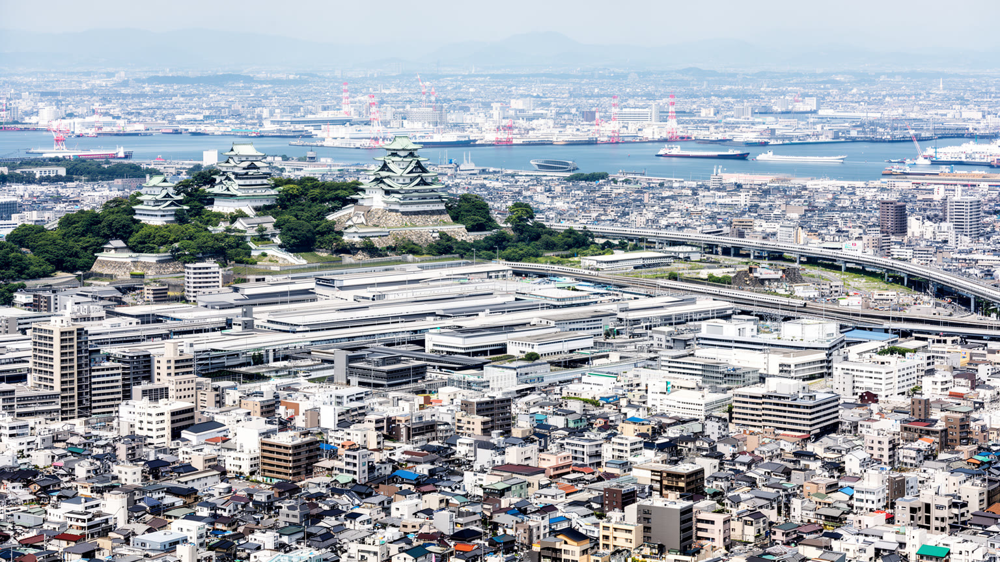
名古屋を一つの言葉で語れば、日本列島の中央にある実用的な産業大都市である。東京の政治と金融、大阪の商業文化に挟まれるため、外からは控えめに見えることがある。しかし実際には、自動車、航空宇宙、工作機械、港湾物流、大学研究、郊外住宅、城下町の記憶、熱田の信仰、味噌の食文化が、きわめて強い都市圏を作っている。名古屋の重要性は、派手な観光イメージより、部品が時間どおり届き、工場が動き、駅と港が人と貨物を流し、郊外の家庭が仕事を支えるところにある。だから、この都市を読むには名駅や栄だけでなく、豊田方面の道路、名古屋港、町工場、喫茶店、熱田の森、住宅地の朝をつなげて見る必要がある。製造業の成功は強みである一方、電動化、脱炭素、労働力不足、災害、中心市街地の更新という課題も抱える。名古屋は自分を過度に飾らない街だが、その控えめさは重要性の小ささを意味しない。むしろ、世界市場と日本の日常が接続する現場がここにある。観光客には堅実に見える街並みの奥に、巨大な供給網と生活のリズムがある。名古屋の面白さは、都市の華やかさではなく、機能が積み重なって文化になる過程を読めるところにある。仕事の正確さ、食の濃さ、郊外の広さ、神社の静けさは別々の特徴ではない。どれも、実用を尊びながら長く続ける地域の性格を映している。